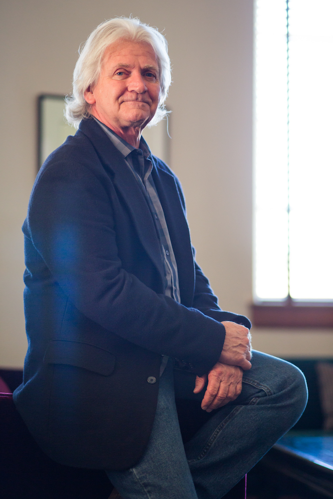

On the steps of Wilson Plaza – among the cluster of chatting students, teaching assistants with papers tucked against their elbows and busy professors on their way to lecture – one face pops up more often than most.
Ron Jarvis, the patron services manager for Royce Hall, said he loves walking around outside the building to talk to passerby and grabbing wandering students for a quick tour of the theater inside. Although his official position is to operate the internal workings or Royce Hall, he also acts as a sort of ambassador, ready with a couple of anecdotes that he has picked while working for more than 20 years at Royce.
“To me, she’s a she,” Jarvis said. “Even though we know Royce Hall as the icon of UCLA, the picture of UCLA that you see, (she) is also an incredible ambassador. (She’s) very impressive – to put it lightly, there are lots of stories.”
***
Jarvis’ story began with a psychic who talked him into auditioning as a circus clown, the first job of his five-decade career in the world of theater and entertainment.
“I never really had a plan,” Jarvis said. “What happens is, I just go places sometimes, and I’m happy. I have no attention span.”
Behind the hardware shop that Jarvis worked at in the summer of 1972, a tarot card reader who owned a shop nearby had a prediction for him.
One day, he said, the psychic handed Jarvis and his roommate a clip from the newspaper advertising an audition for clown college, convinced they should try out.
Jarvis said he didn’t necessarily believe in psychics, but she was so adamant, even lending Jarvis her Volkswagen to make the trip, that he and his roommate took her up on her prediction.
“It was a real hoot,” Jarvis said. “We put together a little routine where we boxed each other, and sure enough, by the end of the interview, they called us over and invited us to clown college.”
Following clown college, Jarvis became a professional clown with the Ringling Bros. and Barnum and Bailey circus, doing silent comedy. He intended to move to Paris to further his art.
Jarvis’ career took an abrupt turn in 1975, when he saw the “National Lampoon Lemmings” show in New York, which featured John Belushi, Bill Murray and other comedians that later gained fame on Saturday Night Live.
Inspired by the style of their comedy and the backstage conversation he had with the comedians, Jarvis moved to Chicago to join The Second City improvisational comedy troupe . For the next few years, Jarvis worked as an actor and freelance writer, and found success writing and acting for television shows such as “Star Trek,” “Matlock,” and “Alfred Hitchcock Presents.”
In the late 1980s, things slowed down for Jarvis, as a buildup of writers’ strikes made it increasingly difficult for freelance writers to find work.
After the Writers Guild of America strike of 1988, Jarvis, whose daughter had turned 3 years old, decided to pursue a more stable job. Following up on a suggestion from a friend who was a stage manager at the time, Jarvis began his career at Royce Hall in 1989 as a member of the backstage crew.
Since then, Jarvis has worked hundreds of shows in art, entertainment and academia, from Edward Sharpe and the Magnetic Zeros and Coldplay concerts to the 1994 Superhighway Summit, in which keynote speaker and former Vice President Al Gore spoke to a community of the world’s leading academics and technology business leaders to introduce the concept of the Internet.

Jarvis said his main job throughout the years has been taking care of Royce Hall and everyone within it – making sure everything that comes in and out of Royce does so smoothly. Part of his job, he said, is solving the unique and often strange backstage problems that each event brings.
For the Superhighway Summit, Jarvis recalls working with the Secret Service and the Navy SEALs to establish security for the high-profile event.
“I had to walk the Secret Service around for a week,” Jarvis said. “They went around the entire area, lifted up manhole covers and went inside to make sure nothing was there, and then welded them closed.”
Jarvis said he remembers walking Secret Service agents with bomb-sniffing dogs throughout the entire building and dealing with unforeseen situations, such as a suspicious, large filing cabinet that had been left outside the hallways of the French department for a year. The cabinet was placed directly above the room that Gore was to have lunch in with the event’s dignitaries.
No one knew how it got there, Jarvis said, and after a back-and-forth between the agents and a member of the French department who seemed to know nothing about it, Jarvis offered a simple solution.
“I grabbed a hand truck and pushed it to the other end of the building,” Jarvis said. “That satisfied those guys.”
***
Throughout his time, Jarvis said he’s seen the history of Royce Hall and UCLA unfold in front of him one event at a time, and it hasn’t always been easy. In 1994, a few years after Jarvis joined as a backstage crew member, the Northridge earthquake shook the foundations of Los Angeles, wreaking havoc on buildings that didn’t have the infrastructure to withstand an earthquake of that magnitude. Royce Hall was no exception and was left shattered by the quake.
Jarvis said he was responsible for going through the nooks and crannies of the entire building and documenting the damage for the Federal Emergency Management Agency.
“After the first day, I came back in tears,” Jarvis said. “I was crying – I couldn’t believe it. The crew asked me, ‘What’s the matter?’ I said, ‘Well, we’re going to have to close.’ That was painful.”
Following the earthquake, Jarvis left Royce Hall to work at Cal State Los Angeles as a theater manager for seven years.
Throughout that time, however, Jarvis said he missed Royce Hall, and it felt like he was away from home. Despite the lack of a formal job offer, Jarvis decided to return to Royce Hall to work as a “casual” – a part-time extra – until the job of house manager opened up, which he seized.
Jarvis said that aside from each show’s quirks, what he enjoys most is the unexpected evocation of emotion and reflection that certain shows bring.
In 2007 , the Center for the Art of Performance at UCLA, then called UCLA Live, hosted “Black Watch” – an award-winning production about a Scottish regiment in the Iraq War, exploring the complex issues of wartime – at the Freud Playhouse.
Jarvis said the performance came at a time when the Iraq War was a hotly contested topic, so the audience was composed of lots of people who were against the war and lots of people who were for it.
“It was fascinating to witness,” Jarvis said. “Because they all came out, and it affected both sides. People came out stunned.”
Jarvis said he remembers the woman he was sitting next to was brought to tears by the performance.
She was crying throughout the whole show and apologized, Jarvis said, so he sat with her and comforted her. Finally, she told Jarvis that her brother had suffered from post-traumatic stress following the Vietnam War and committed suicide. It wasn’t until this show that she began to understand some of what her brother went through and some of the things he must have seen.
“It caught her so viscerally that it just leveled her,” Jarvis said. “This is what theater is for. For her, it lanced at something that had been inside of her for a long time.”
Jarvis said part of what has kept him grounded at Royce Hall is the change in perspective that its shows bring, a refreshing constant over the years.
“If you go into the hall in the middle of the afternoon, you’ll feel the energy of all these shows that have been going (for decades),” Jarvis said. “There’s a vibration in that room that’s really different, so it’s wonderful to walk around with the lights out and just kind of cruise in there.”
Jarvis said that although all theaters have this feel, with Royce Hall, it’s more personal.
“Royce is very special for me, especially since I’ve climbed into every corner,” Jarvis said. “So yeah, it’s a living thing.”